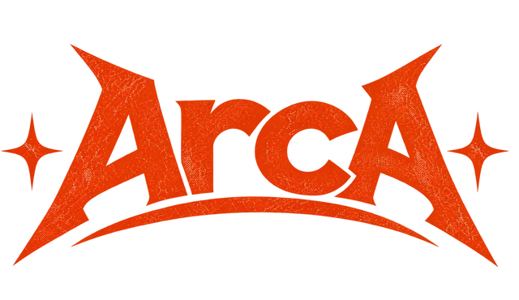
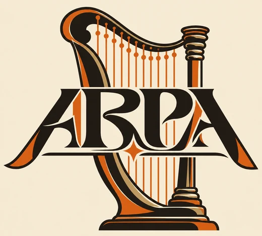

00:00:00:00 / 00:00:00:00
Corta la grabación, pon la letra de las canciones, el nombre de quien predica y el versículo, y exporta en MP4 para YouTube, Facebook o Reels. Gratis, sin marcas de agua y sin funciones bloqueadas.
Funciona mejor en Chrome o Edge, en computadora.
Elige la forma del video y entras directo al editor con todo listo. Puedes cambiarla después.
Las herramientas de un editor profesional, pensadas para el material de la iglesia. Todas incluidas, sin pagar nada.
Dos pistas de video, dos de texto, efectos, música y voz. Arrastra, recorta y acerca con el mouse.
7 pistas · imán · deshacerAberración cromática, sacudida RGB, glitch, VHS, destellos, zoom warp y más. Todos incluidos.
18 efectosBezaleel encuentra los golpes de la canción. Efectos, cortes y transiciones caen a tiempo. En canciones lentas, marca el ritmo tocando.
detección de BPM · tap tempoPon el título detrás de quien canta o predica, o desenfoca y cambia el fondo.
corre en tu computadoraArrástralas a la unión entre dos clips, o al inicio o final de uno. Fundido, warp, glitch, barrido y más.
17 transicionesLetra de canción, versículo, tercio inferior con el nombre, créditos y más.
7 estilos · 6 tipos de letraAjusta brillo, contraste y saturación, usa uno de los looks o importa los LUT de tu cámara.
10 looks · archivos .cubeEcualizador, reducción de ruido y modo voz para que la prédica se oiga clara.
EQ de 5 bandas · quita ruidoArrastra la grabación del culto, la música y las fotos a la ventana.
Corta, agrega títulos y transiciones. Toca cualquier clip para cambiarlo.
Toca Exportar video y guárdalo. Súbelo a YouTube, Facebook o Instagram.
Sin suscripciones, sin marcas de agua y sin efectos "premium". Bezaleel es de código abierto: cualquier iglesia puede usarlo, y cualquiera puede ayudar a mejorarlo.
Los archivos se quedan en este navegador. Tu proyecto se guarda solo y sigue aquí cuando vuelvas a abrir la página.
El video se graba mientras se reproduce: uno de 5 minutos tarda unos 5 minutos. Deja la pestaña abierta hasta que termine.
Bezaleel nace en Philly, el ministerio de alabanza de Taber Olocuilta. Es parte de una familia de herramientas gratis para equipos de alabanza.


